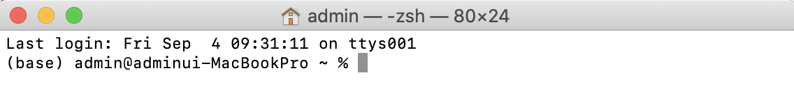
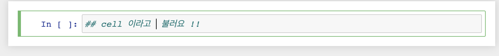
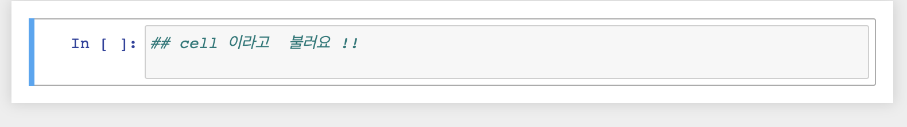
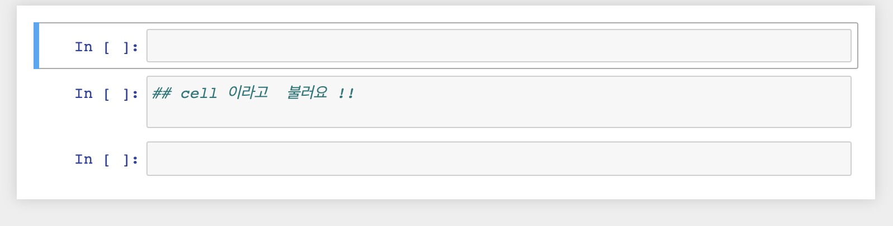
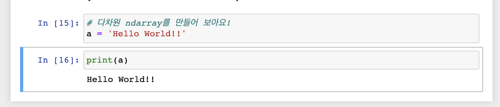

[Python] Anaconda & Jupyter Notebook 설치 및 가상환경 설정
ANACONDA
오늘은 ANACONDA 에 대하여 알아보도록 하겠습니다.
ANACONDA 를 사용하는 이유는 다음과 같습니다.
- 라이브러리를 별도로 설치하지 않아도 된다.
- 가상환경을 사용할 수 있다.
ANACONDA 설치
그렇다면 우선 설치부터 해보도록 하겠습니다.
- 아나콘다 다운로드 링크 에 접속하여 해당되는 버전을 다운로드 하도록 하겠습니다.
저는 MAC 환경에서 사용하므로 MAC 버전용으로 다운로드 하도록 하겠습니다.
- 다운로드가 되었다면 별다른 설정없이 설치를 해주시면 됩니다.
다만 윈도우 사용자분들께서는 경로설정(path)를 유의하시어 설치하시면 되겠습니다.
가상환경 생성
설치가 완료되었다면 가상환경을 만들어 보도록 하겠습니다.
Mac사용자분들을 터미널을 열어주시고 윈도우 사용자분들께서는 Anaconda prompt를 실행시켜주시면 되겠습니다.
실행하시면 이전과는 다르게 (base) 라는 부분이 생성이 되어있는 것을 확인하실 수가 있습니다.

- 가상환경이름은 “data_env” 로 지정하고 파이썬 버전은 3.7 버전으로 설치하겠습니다.
$ conda create -n data_env python=3.7 openssl - 설치가 다 되었다면 제대로 설치가 되어있는지 확인하겠습니다.
$ conda info -—envs - 만들어진 가상환경으로 접속합니다.
$ conda activate data_env - 가상환경을 탈출하기 위해서는 하기 명령어를 입력합니다.
$ conda deactivate
Jupyter notebook
가상환경 설치가 완료되면 개발도구인 IDE를 설치를 해야합니다. 저는 Jupiter notebook이라는 web기반의 개발툴을 이용하겠습니다.
현재 data_env 가상환경에서 하기명령어를 이용하여 nb_conda를 설치하도록 하겠습니다.
$ conda install nb_conda
경로설정
Jupyter notebook 이 사용할 기본 디렉토리 (working directory)를 지정 하도록 하겠습니다. 이 작업을 하기위해 환경 설정 파일을 하나 생성해서 기본 디렉토리를 지정해서 사용해보도록 하겠습니다.
$ jupyter notebook --generate-config
명령어를 입력하면 .jupyter 라는 숨김폴더가 생성되고 그 안에 jupter_notebook_config.py 파일이 생성됩니다.
그 중 jupter_notebook_config.py 파일에서 하기항목에 경로이름을 입력하여 기본 디렉토리 (working directory)를 설정하겠습니다.
##The directory to use for notebooks and kernels. #c.NotebookApp.notebook_dir = ‘경로이름’
Jupyter Notebook 실행
상기 설정이 전부 완료되었다면 Jupyternotebook을 실행해보도록 하겠습니다.
$ jupyter notebook
명령어를 입력하면 바로 Jupyter Notebook이 실행되는 것을 확인할 수 있습니다.
Jupyter Notebook 사용
Jupyternotebook 에서 ` cell`에 대하여 설명하도록 하겠습니다.
cell을 선택하면 초록색으로 표시되며 선택하지 않으면 파란색으로 표시됩니다.


셀 추가
B는 아래 쪽에 셀 추가 A 키는 cell을 위쪽에 추가 하는 명령어 입니다. 지우려면 D 키를 두번 눌러서 지울수 있습니다.

셀 추가
셀은 서로 데이터나 정보가 공유됩니다. 앞서 셀에서 ‘a’를 정의하였다면 다른 셀에서 사용할 수 있습니다.

오늘은 Anaconda와 Jupyternotebook에 대하여 알아보았습니다.